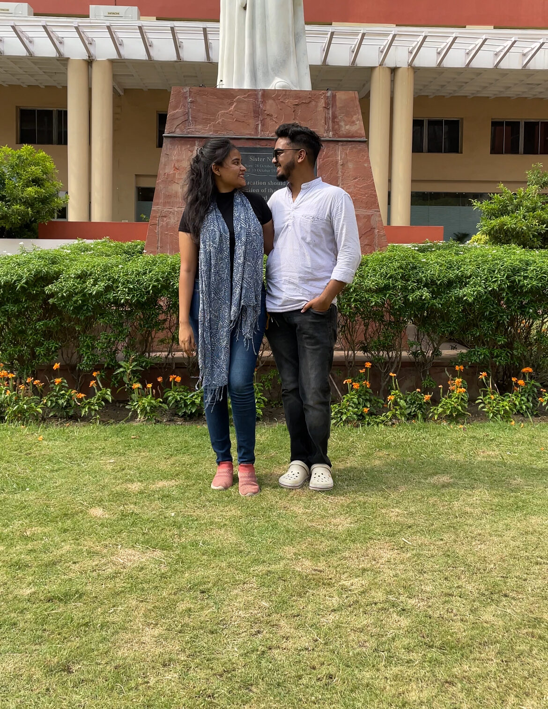
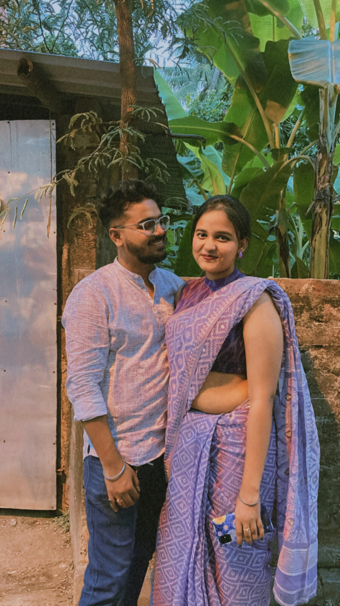
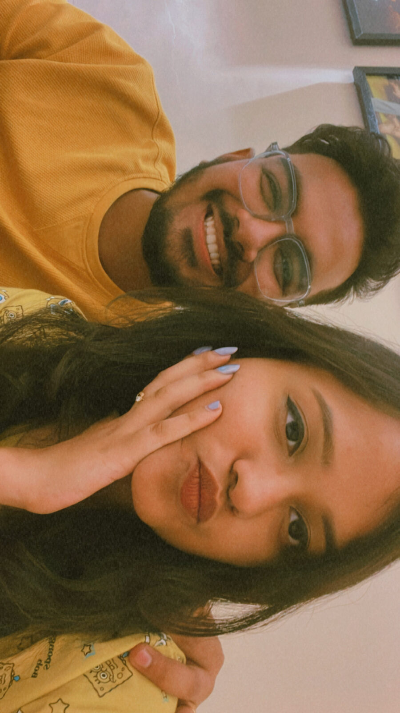

Not the highlight reel — just the moments I keep going back to.
We met in college over an assignment that neither of us remembers the grade for anymore. I remember you, arguing your point, laughing at mine, and somewhere in between deadlines, we stopped being just classmates.

Our first movie date. I don't remember much of the film — I was too busy noticing you notice it. That ticket stub is still one of my favorite things we ever made together, even if it was just two hours in a dark room.
The festivals we dressed up for, the drives with no destination, the quiet mornings by the window not needing to say anything at all. None of it felt small while we were living it.

Not the dressed-up photos, though I love those too. The version of you with messy hair and no makeup, laughing at something stupid I said. That's the person I miss most.

We're apart right now, and I'm not writing this to pretend that's a small thing or to rush past it. I know things need to actually be talked through, not just written about. But I wanted you to know — before anything else — that what we built isn't something I'm ready to let become a memory.
Those memories are a lifeline that can't be erased.